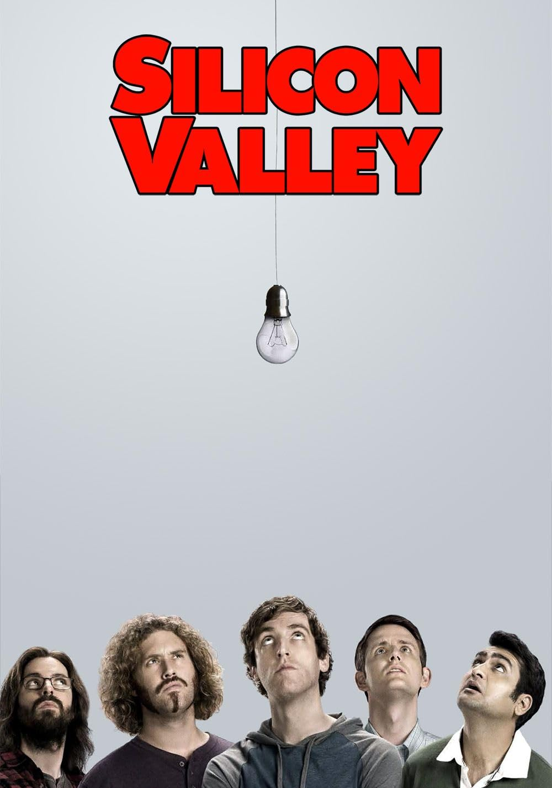

Silicon Vally

Silicon Valley is a satirical HBO comedy that follows Richard Hendricks and his startup, Pied Piper, as they navigate the absurdities and cutthroat culture of the tech industry. It’s widely praised for its high-stakes humor and eerily accurate portrayal of "bro-grammer" tropes and venture capital chaos.
To download series click here